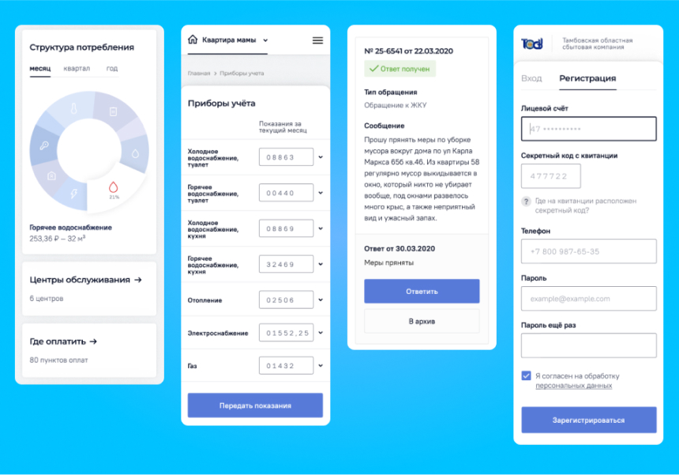
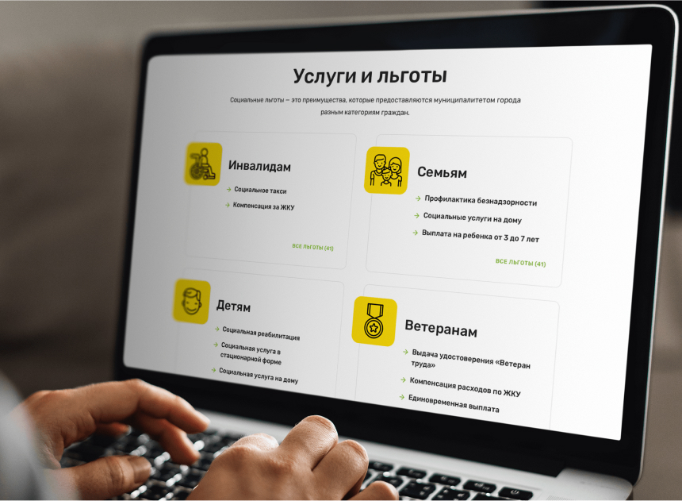
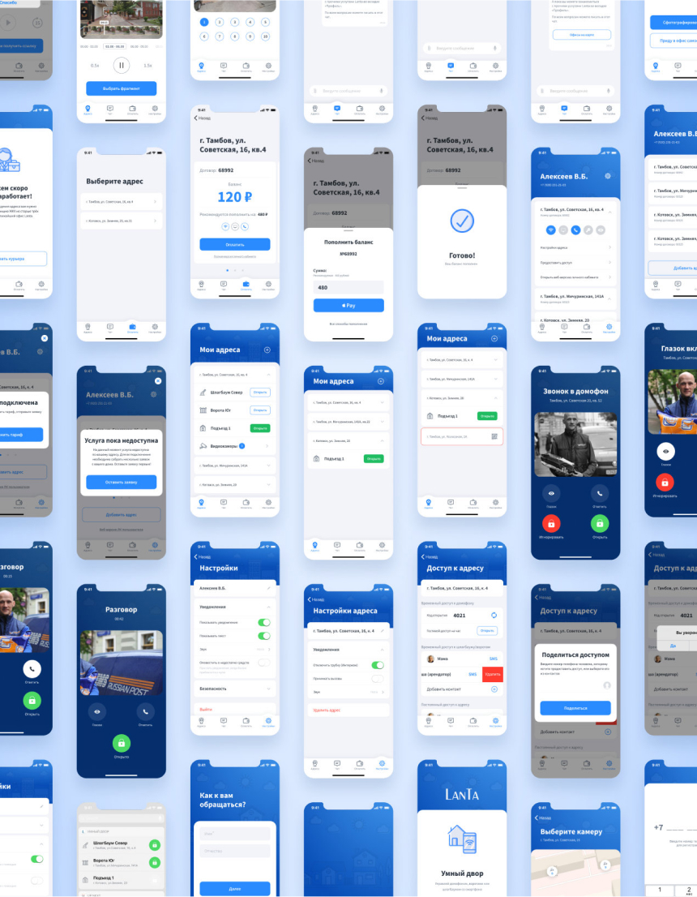

Социальный портал Пензенской области
Социальный портал Пензенской области – это место где каждый житель города Пенза и Пензенской области может узнать о всех социальных организациях города, доступных в них услугах, а также записаться на приём в одну из них.
Задача
Создать единый социальный портал для жителей Пензенской области который будет включать в себя весь перечень услуг оказываемых социальными службами города с возможностью централизованной записи на приём в любую социальную организацию города.
Подготовка
Мы провели цикл встреч с клиентом, разобрались с его бизнес-процессами, выяснили, как именно проходит работа с текущими клиентами, какие технические ограничения есть на уровне работы с данными.
Составили информационную архитектуру и первые прототипы. На этом этапе появились дополнительные функции:
- оплата тарифов;
- добавление и подтверждение адреса;
- гостевой доступ;
- оформление заявки;
- оплата и чат с техподдержкой.
User experience
То, что в России называют «пользовательский опыт», UX, включает в себя все стороны восприятия сайта. От того, насколько удобно находить нужную информацию, до эмоций, которые вызывает то или иное решение. Каждый элемент выполняет глобальную задачу — сделать пребывание пользователей на сайте комфортным и приятным.
Система поддоменов.
Вкупе с разработкой основного портала, нашей целью было разработать сайты для 78 организаций Пензенской области (которые находятся на портале) в двух различных стилистиках. Синяя – для Комлексных Центров и зелёный для Управлений Социальной Защиты Населения. При разработке сайтов организаций пользовались теми же принципами, что и при разработке основного портала, ведь главный сайт это сердце, а сайты организаций это артерии по которым разносится информация в любую точку нашей области.
Скорость работы над сайтом.
Время на разработку сайта было ограничено тремя месяцами. Чтобы сдавать каждую итерацию в срок, разбили процесс на спринты и успевали прорабатывать не только запланированные макеты, но и их вариации для поиска лучшего решения.
Итог
Спустя три месяца работы над основным сайтом, так и на сайтами организаций получили удобный и что не менее важно полезный информационный портал для всех жителей Пензенской области. Каждый месяц его посещают десятки тысяч человек и оставляют свои заявки, вопросы и записи на приём. Сайт позволил жителям и администрации города Пенза иметь и регистрировать все обращения граждан в одном месте.
Спустя три месяца работы над основным сайтом, так и на сайтами организаций получили удобный и что не менее важно полезный информационный портал для всех жителей Пензенской области. Каждый месяц его посещают десятки тысяч человек и оставляют свои заявки, вопросы и записи на приём. Сайт позволил жителям и администрации города Пенза иметь и регистрировать все обращения граждан в одном месте.